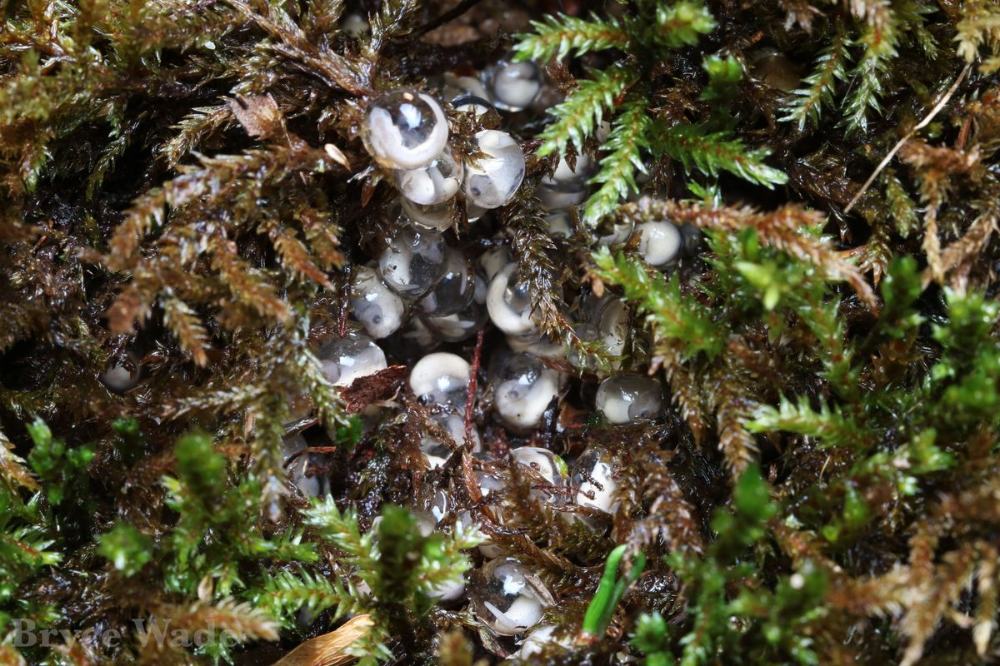
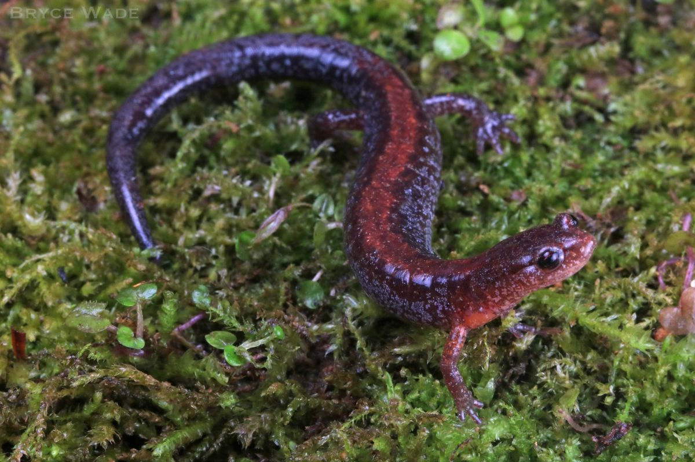

Publications
See my full, up-to-date list on Google Scholar.


- 2026Wade, B.S., Pierson, T.W., Fitzpatrick, B.M., Peterman, W.E., and Carter, E.T. Ecological connectivity and habitat loss shape patterns of genetic diversity in a threatened salamander. Landscape Ecology 41.
- 2026Wade, B.S., Crawford, J.A., and Peterman, W.E. Legacy of historical disturbance shapes modern genetic diversity in a high-elevation salamander. Conservation Genetics 27:18.
- 2026Wade, B.S. and Carter, E.T. The importance and rarity of spatial replication in landscape genetics. Current Landscape Ecology Reports 11.
- 2026Laffoon, T.R., Hughes, D.B., Wade, B.S., Hayter, L.E., and Carter, E.T. Temperature and size-selective biases in hoop net surveys of aquatic turtles: insights from a 17-year student-led monitoring program. Herpetological Conservation and Biology 21:428–441.
- 2025Wade, B.S., Pierson, T.W., Fitzpatrick, B.M., and Carter, E.T. Spatial replication is important for developing landscape genetic inferences for a wetland salamander. Molecular Ecology 34:e17808.
- 2025Carter, E.T., Wade, B.S., Jett, R.T., et al. Ecological connectivity and in-kind mitigation in a regulatory decision framework: a case study with an amphibian habitat specialist. Journal of Environmental Management 377:124546.
- 2023Wade, B.S., Carter, E.T., DeRolph, C.R., et al. Advancing wildlife connectivity in land use planning: a case study with four-toed salamanders. Journal of Wildlife Management 87:e22456.
- 2021Wade, B.S., Kemp, B.H., Vininski, M.S., et al. Kleptogenesis in Kentucky: genetic analyses of unisexual Ambystoma at the southernmost extent of their range. Herpetological Review 52:730–734.
- NextWade, B.S., Peterman, W.E., Fitzpatrick, B.M., and Carter, E.T. Variable but permeable landscapes maximize pattern detection in landscape genetics. Molecular Ecology ResourcesIn revision
- NextBucholz, J.R., McCulloch, B., Drake, J.C., et al., Wade, B.S., and Mims, M.C. GLaDIS: Global Landscape Genetics Dataset of Introduced Species. Scientific DataResubmitted
- NextPierson, T.W., Wade, B.S., et al. Southern Appalachia is a hotspot of evolutionary diversity (and gene flow) for the four-toed salamander. Journal of BiogeographyIn prep.